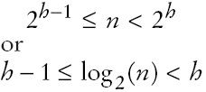

Heap Efficiency
- Insertion and removal operations visit at most h nodes
- h: Height of the tree
- If n is the number of elements, then

- Thus, insertion and removal operations take O(log(n)) steps
- Heap's regular layout makes it possible to store heap nodes efficiently in an array